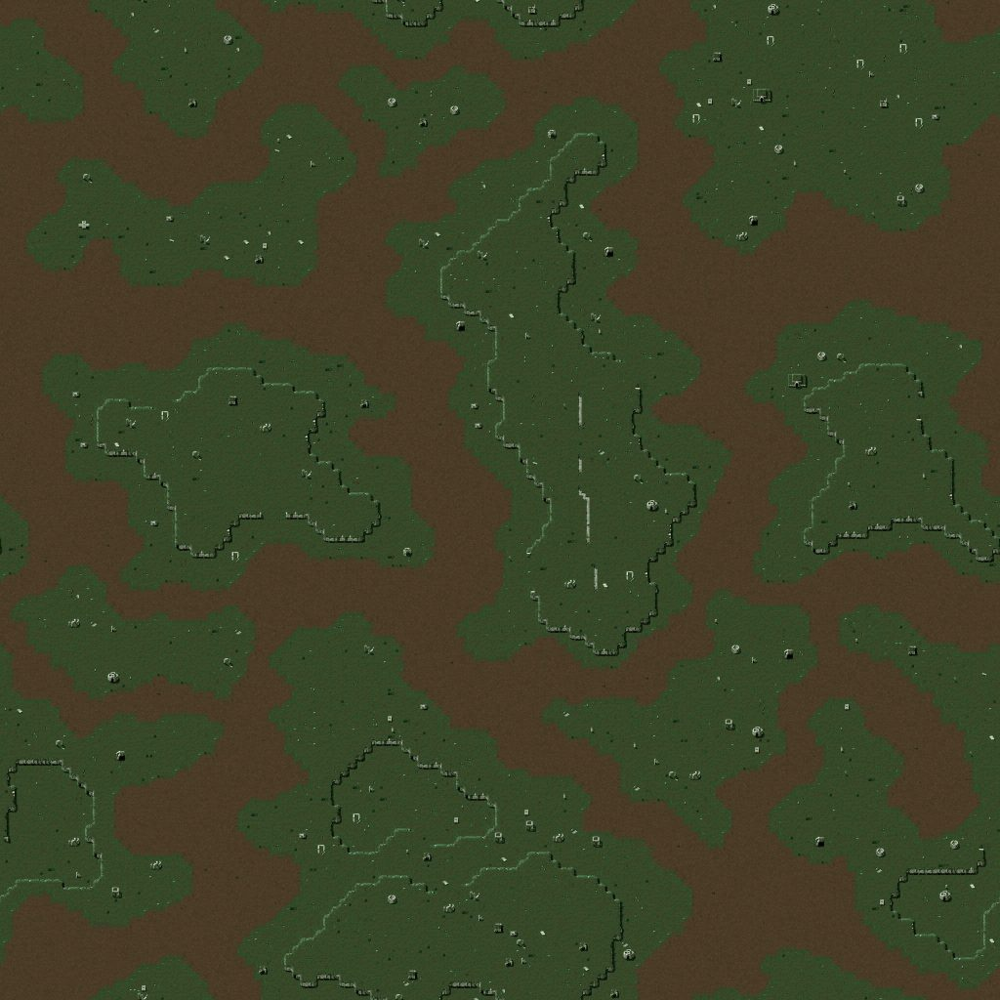

Скатэль

Карта
Предпросмотр рельефа карты планеты (файл .MP из игры), одна клетка - несколько пикселей.
- Размер карты
- 256 x 256 клеток
Место посадки (8) Залежи руды (64)

Связанное
- Требует
- Преда, Цаво
- Открывает
- Звездолет (Пришельцы), Мега-фабрика (Пришельцы), Ионный Акселератор, Актиновый Сердечник, Звездолет (Люди), Мега-фабрика (Люди), Пульс-двигатель, Система Суперстелс, Ракета Волк, Миа
- Звёздная система
- Система Нура
Параметры конфигурации, которых нет в игре (13)
MAP- 307_Ruin.mp
COORDINATE_X- 960
COORDINATE_Y- 920
ASTEROIDS- 10
ENEMY- 2
TURN_SPEED- 100
X1- 10
Y1- 10
X2- 40
Y2- 40
SOURCE_MUL- 4, 10, 10, 10
SOURCE_ADD- 0, 0, 0, 0
BANK- 0, 1, 2, 3, 4, 5, 6, 7, 8, 9, 10, 11, 12, 13, 14, 15, 16, 17, 18, 19, 20, 21, 22, 23, 24, 25, 26, 27, 28, 29, 30, 31, 32, 33, 34, 35, 36, 37, 38, 39, 40, 41, 42, 43, 44, 45, 46, 47, 48, 49, 54